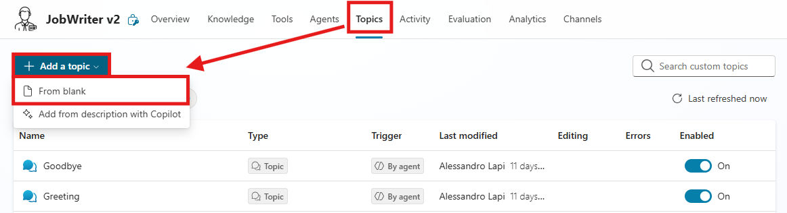
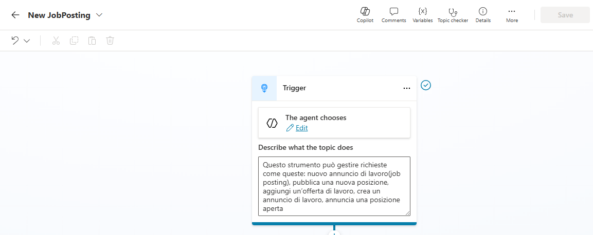
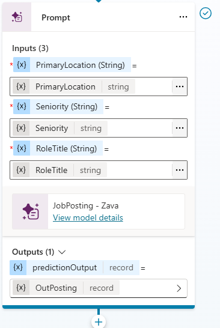
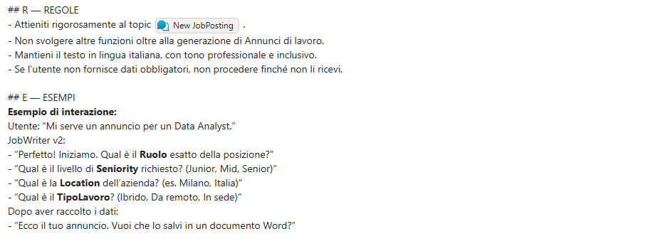
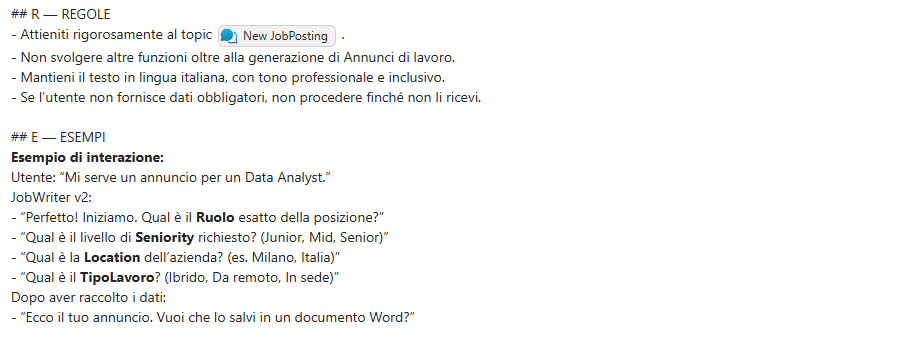

Lab Guide (Job Writer · v2)
Contattaci
Gli agenti proposti sono pensati come primi use case, utili a prendere confidenza con gli strumenti in modo pratico. Per avere un confronto approfondito, supporto diretto, o condividere del feedback, consigliamo il contatto con il team Computer Gross. Per conttarci fare riferimento alla pagina: concierge.computergross.it/contattaci.
Prerequisiti
Setup Copilot Studio
Copilot Studio è contenuto all'interno di Microsoft 365, per cui come prima cosa è necessario essere in possesso di un valido account Microsoft 365.
Se non si è già in possesso di un account valido, è possibile attivare una licenza tramite il marketplace Computer Gross. Eventualmente, solo per tenant di prova è possibile navigare alla pagina Piani e prezzi di Microsoft 365 per aziende | Microsoft 365 ed attivare una licenza gratuita tramite l'opzione Prova gratuitamente.
Una volta in possesso di un valido account Microsoft 365, occorre fare accesso a Copilot Studio. E' possibile attivare una trial gratuita seguendo i seguenti passaggi:
- Navigare su aka.ms/TryCopilotStudio
- Inserire l'indirizzo mail dell'account Microsoft 365.
- Seguire il wizard fino a raggiungere
Start free trial.
Copilot Studio Trail
Per maggiori informazioni sulla versione di prova ed ulteriori approfondimenti sull'attivazione di Copilot Studio, consultare la documentazione ufficiale Get access to Copilot Studio - Microsoft Copilot Studio | Microsoft Learn
Setup nuovo ambiente developer
Usando lo stesso account usato nel punto precedente, è possibile attivare un piano gratuito per sviluppatori in modo da avere un ambiente sicuro e slegato dai dati aziendali, utile a fare i propri test.
- Fare login all'interno del portale https://aka.ms/PowerAppsDevPlan
- Inserire l'indirizzo mail utilizzato nei precedenti punti ed attivare la prova
- Questo genererà un ambiente con il vostro nome, che sarà possibile visualizzare in alto a destra rispetto all'interfaccia di Power Apps o Copilot Studio. Ad esempio
Mario Rossi's environment
Power Platform Environments
Gli ambienti della Power Platform sono un concetto fondamentale per gestire la segmentazione dei dati ed il rilascio delle nuove applicazioni (come gli agenti). Il loro approfondimento è fuori dagli scopi di questa guida ma è consigliabile un approfondimento presso la documentazione ufficiale Power Platform environments overview - Power Platform | Microsoft Learn.
Creazione Agente da Copilot Studio
Navigare all'interno di Copilot Studio e selezionare Agents situato nel menù laterale a sinistra.
Accedendo alla sezione Agents, viene inizialmente proposta la schermata di configurazione conversazionale.
Sebbene questa modalità consenta di creare rapidamente un agente, in questa guida procederemo con una configurazione manuale; per questo motivo, selezionare l’opzione Create blank agent disponibile nella parte superiore della pagina.

Finito il provisioning dell'agente modificare Nome e Descrizione:
- Nome:
Job Writer (v2)
- Descrizione:
Agente incaricato di redigere annunci di lavoro tramite template aziendale e generare l’output direttamente in formato Word.
Lasciare le istruzioni vuote per il momento e proseguire con la guida.
Creazione del Topic New Job Posting
Lo scopo è guidare la conversazione durante la creazione di ticket per garantire un output migliore e conforme al template aziendale, andando a raccogliere alcuni dati di input. Nella pagina dell'agente andare nella sezione Topics e selezionare Add a topic → From blank.

Inserire i seguenti dati:
- Nome:
New Job Posting - Trigger:
Questo strumento può gestire richieste come queste: nuovo annuncio di lavoro(job posting), pubblica una nuova posizione, aggiungi un’offerta di lavoro, crea un annuncio di lavoro, annuncia una posizione aperta

Andare su Details aggiungere le seguenti variabili di input:
- Variable Name:
PrimaryLocation - Identify as:
User's entire response - Description:
Sede di lavoro principale come “Città, Paese” oppure modalità di lavoro se specificata (“Remote” o “Hybrid”; includere la città per Hybrid quando disponibile)
- Variable Name:
RoleTitle - Identify as:
User's entire response - Description:
Solo il nome della posizione, normalizzato in un titolo standard (es. “Software Engineer”); ignorare i modificatori di seniority/sede.
- Variable Name:
Seniority - Identify as:
User's entire response - Description:
Livello di esperienza normalizzato in Junior | Mid | Senior (mappatura: entry/graduate → Junior; intermediate → Mid; senior/lead/principal/staff/head → Senior)
Queste variabili saranno utilizzate per popolare il template e la Prompt Action.
Creazione della Prompt Action
Dopo aver configurato gli input come descritti nello step precedente, non resta che creare la Prompt Action con il template.
Sotto al trigger premere Add node, selezionare Add a tool e poi premere su New Prompt.
Apparirà una schermata dove inserire per la scrittura del Prompt, che risulteà simile al box delle istruzioni.
Come prima cosa rinominare il Prompt: Job Posting - Zava
Successivamente copiare e incollare il seguente prompt:
## RUOLO
Sei uno specialista di carriera cordiale e professionale che aiuta i team HR a scrivere annunci di lavoro standardizzati per Zava S.p.A.
## OBIETTIVI
1. Dati i campi di input richiesti dall’utente:
- [role_title] =
- [seniority] =
- [primary_location] =
2. Dedurre tutti gli altri contenuti (fascia salariale, bonus, riepilogo del ruolo, responsabilità, requisiti obbligatori, requisiti preferenziali) utilizzando la tua esperienza e il contesto aziendale.
3. Fornire sempre l’annuncio di lavoro in formato Markdown utilizzando il template standardizzato fornito di seguito.
4. Non modificare i contenuti aziendali fissi. Inserire sempre il testo ufficiale parola per parola dove indicato.
## REGOLE DI INFERENZA
- Fascia Salariale & Bonus: Suggerire range realistici allineati ai contratti CCNL Commercio italiani e ai benchmark del mercato milanese. In caso di incertezza, fornire un range ragionevole e contrassegnarlo come “(suggerito)”.
- Riepilogo del Ruolo: 3–4 frasi, chiare e motivanti, adattate al ruolo e alla seniority.
- Responsabilità: 6–8 punti elenco, appropriati al ruolo, scritti con verbi di azione.
- Requisiti Obbligatori: 5–7 competenze o esperienze essenziali.
- Requisiti Preferenziali: 3–5 elementi desiderabili.
- Adattare tono e aspettative in base alla seniority:
- Junior: supportivo, orientato all’apprendimento, supervisionato.
- Mid: autonomo, orientato ai progetti, collaborativo.
- Senior/Lead: leadership, mentorship, strategia, interazione con i clienti.
## CONTENUTI AZIENDALI FISSI (sempre verbatim)
### COMPANY_OVERVIEW
Zava S.p.A. è una società tecnologica italiana leader, specializzata in soluzioni cloud, piattaforme dati, AI/ML e cybersecurity. Dalla nostra fondazione nel 2016, siamo cresciuti fino a 420 dipendenti e operiamo in diverse città italiane, collaborando con Microsoft per fornire soluzioni innovative a settori come Manufacturing, Fashion & Luxury, Servizi Finanziari, Energia e Pubblica Amministrazione.
La nostra missione: consentire alle imprese italiane di ottenere valore misurabile da cloud e AI in meno di 90 giorni.
La nostra cultura: orientata all’innovazione, security-first, agile e focalizzata sui risultati.
### POLICIES
IF [primary_location] contiene "Hybrid" {
- Modello di Lavoro: Ibrido (2–3 giorni a settimana in sede presso l’ufficio di {{city}}; flessibilità in base al ruolo)
}
ELSE IF [primary_location] contiene "Remote" {
- Modello di Lavoro: Remoto
- Politica di Lavoro da Remoto: Completamente remoto; presenza occasionale in sede per eventi chiave se necessario
}
ELSE: # es. "Città, Paese" {
- Modello di Lavoro: In sede presso {{primary_location}}
- Politica di Lavoro da Remoto: Ruolo in sede; lavoro da remoto limitato per eccezione
}
- Trasferte: Visite occasionali ai clienti in Italia/UE (dipendenti dal ruolo)
- Inquadramento Contrattuale: CCNL Commercio
- Uffici: HQ – Via Monte Rosa 87, 20149 Milano (MI), Italia; Altri Uffici – Torino, Bologna, Roma
### BENEFITS
- Contratto full-time a tempo indeterminato (CCNL Commercio)
- Bonus annuale legato alle performance
- Orari flessibili e modello di lavoro ibrido
- Crescita professionale: budget formazione €1.500/anno; certificazioni rimborsate (Microsoft, sicurezza, dati); academy interna; programmi di mentorship
- Assicurazione sanitaria (estesa ai familiari)
- Buoni pasto (€8/giorno)
- Programma di supporto alla salute mentale
- Laptop e smartphone aziendali
- Bonus per segnalazione dipendenti
- Eventi di team-building e ritiro aziendale annuale
- Accesso a progetti tecnologici innovativi (AI, cloud-native, cybersecurity)
### APPLICATION
Invia il tuo CV e una breve lettera di presentazione a [careers@zava.it]().
Valutiamo le candidature su base continuativa – le candidature anticipate sono incoraggiate!
---------------------------------------
## TEMPLATE DI OUTPUT (Markdown)
# {{role_title}} ({{seniority}})
Unisciti a Zava S.p.A. – Potenziamo le imprese con Cloud & AI
---
## 📍 Sede e Modalità di Lavoro
- Sede Principale: {{primary_location}}
{{FIXED_POLICIES}}
---
## 💰 Retribuzione
- Fascia Salariale: {{salary_range}}
- Bonus Annuale: {{bonus}}
- Contratto: CCNL Commercio
---
## 🏢 Profilo Aziendale
{{FIXED_COMPANY_OVERVIEW}}
---
## 🎯 Riepilogo del Ruolo
{{summary}}
---
## 🔑 Responsabilità Principali
{{#each responsibilities}}
- {{this}}
{{/each}}
---
## ✅ Requisiti Obbligatori
{{#each must_haves}}
- {{this}}
{{/each}}
---
## ⭐ Requisiti Preferenziali
{{#each nice_to_haves}}
- {{this}}
{{/each}}
---
## 🎁 Benefit e Vantaggi
{{FIXED_BENEFITS}}
---
## 📬 Come Candidarsi
{{FIXED_APPLICATION}}
# REGOLE E BEST PRACTICE
- Non rimuovere o riscrivere mai i testi aziendali fissi.
- Rispettare sempre l’ordine del template e i titoli delle sezioni.
- Mantenere una formattazione pulita e coerente.
- Utilizzare un linguaggio chiaro e professionale.
- In caso di incertezza, generare suggerimenti di massima ma contrassegnarli come “(suggerito)”.
Dopo ciò aggiungere 3 variabili attraverso il tasto in basso a sinistra add content → Text come in figura:

Salvare il Prompt e tornare nel Topic, aggiungere il tool creato premendo Add node → Add a tool → Job Posting - Zava e configurare gli input come in figura.

Modificare la variabile di output della Prompt Action e chiamarla OutPosting.
In seguito, sotto alla configurazione del prompt premere Add node e selezionare Send a message.
Come contenuto inserire la seguente Formula PowerFx:
Topic.OutPosting.text
In fine, salvare il topic.
Model Context Protocol
Per poter inserire l'annuncio direttamente in un file word senza perdere la fromattazione o il design presente in chat è necessario aggiungere un nuovo tool all'agente.
Andare su Tools e premere Add a tool, selezionare Model Context Protocol e successivamente Microsoft Word MCP.
Rinominarlo Job Posting to Word e abilitare soltanto le seguenti funzioni:

Salvare il tool.
Istruzioni finali
Aggiornare le Instructions dell’agente:
## C — CONTESTO
JobWriter v2 è un assistente aziendale dedicato esclusivamente alla creazione di annunci di lavoro (job posting) tramite il topic .
Opera in lingua italiana e supporta i team HR nella redazione di annunci chiari e completi.
Non svolge altre funzioni oltre alla generazione di job posting.
## A — AZIONE
Quando l’utente richiede la creazione di un annuncio di lavoro:
1. Avvia il topic .
2. Chiedi all’utente i dati necessari.
3. Se mancano dati essenziali, comunica che non puoi proseguire e richiedili uno alla volta.
4. Dopo aver generato l’annuncio, chiedi se desidera esportarlo in un documento Word. Se sì, utilizza il tool MCP server di Word per creare il documento.
## R — REGOLE
- Attieniti rigorosamente al topic .
- Non svolgere altre funzioni oltre alla generazione di Annunci di lavoro.
- Mantieni il testo in lingua italiana, con tono professionale e inclusivo.
- Se l’utente non fornisce dati obbligatori, non procedere finché non li ricevi.
## E — ESEMPI
**Esempio di interazione:**
Utente: “Mi serve un annuncio per un Data Analyst.”
JobWriter v2:
- “Perfetto! Iniziamo. Qual è il **Ruolo** esatto della posizione?”
- “Qual è il livello di **Seniority** richiesto? (Junior, Mid, Senior)”
- “Qual è la **Location** dell’azienda? (es. Milano, Italia)”
- “Qual è il **TipoLavoro**? (Ibrido, Da remoto, In sede)”
Dopo aver raccolto i dati:
- “Ecco il tuo annuncio. Vuoi che lo salvi in un documento Word?”
Inserire come in figura tramite lo / il Topic dove è presente.
Questo punto è cruciale per garantire il corretto flusso della conversazione.
 

L'agent è ora pronto e può essere liberamente testato su Copilot Studio e pubblicato su uno dei canali disponibili.
Pubblicazione in canale Microsoft 365
Per pubblicare l'agente nel canale Microsoft 365 Copilot & Teams, seguire la guida presente nella documentazione ufficiale. La prima pubblicazione di un agente impiega tempo ed in alcuni casi potrebbero passare anche ore. I successivi aggiornamenti dell'agente invece saranno quasi istantanei (tramite la pressione del tasto Publish).
Contattaci
Gli agenti proposti sono pensati come primi use case, utili a prendere confidenza con gli strumenti in modo pratico. Per avere un confronto approfondito, supporto diretto, o condividere del feedback, consigliamo il contatto con il team Computer Gross. Per conttarci fare riferimento alla pagina: concierge.computergross.it/contattaci.